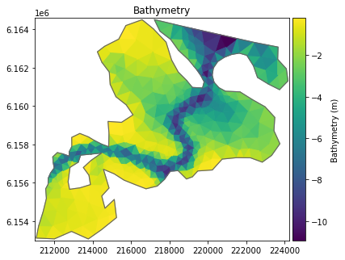
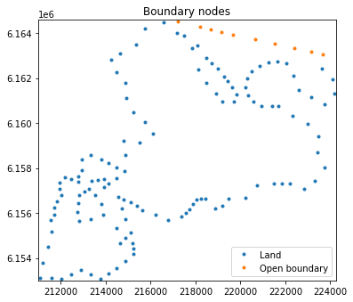
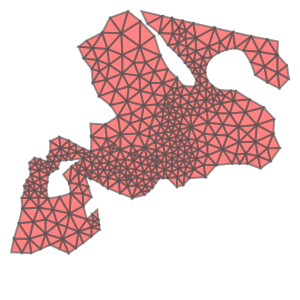
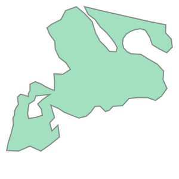
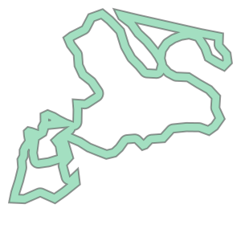
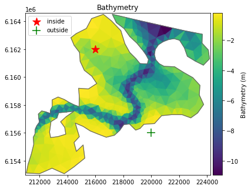
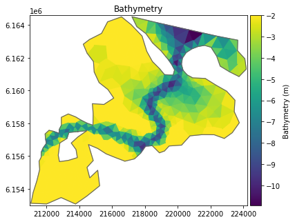

import matplotlib.pyplot as plt
from matplotlib_inline.backend_inline import set_matplotlib_formats
set_matplotlib_formats('png')
plt.rcParams["figure.figsize"] = (6,6)
import mikeioMesh
- read mesh file
- plot mesh
- convert to shapely
- check if point is inside or outside mesh
- subset mesh, plot subset
- change z values
- change boundary codes
meshfilename = r"../tests/testdata/odense_rough.mesh"
msh = mikeio.Mesh(meshfilename)
mshFlexible Mesh
Number of elements: 654
Number of nodes: 399
Projection: UTM-33msh.plot()
msh.plot.boundary_nodes(boundary_names=['Land','Open boundary']);

Convert mesh to shapely
Convert mesh to shapely MultiPolygon object, requires that the shapely library is installed.
mp = msh.to_shapely()
mp
Now a lot of methods are available
mp.area68931409.58160606mp.bounds(211068.501175313, 6153077.66681803, 224171.617336507, 6164499.42751662)domain = mp.buffer(0)
domain
open_water = domain.buffer(-500)
coastalzone = domain - open_water
coastalzone
Find if points are inside the domain
from shapely.geometry import Point
p1 = Point(216000, 6162000)
p2 = Point(220000, 6156000)
print(mp.contains(p1))
print(mp.contains(p2))True
FalseMesh class can also check if a mesh contains points
p1p2 = [[216000, 6162000], [220000, 6156000]]
msh.contains(p1p2)array([ True, False])ax = msh.plot()
ax.scatter(p1.x, p1.y, marker="*", s=200, c="red", label="inside")
ax.scatter(p2.x, p2.y, marker="+", s=200, c="green", label="outside")
ax.legend();
Subset mesh
Select only elements with more than 3m depth. Plot these elements.
zc = msh.element_coordinates[:,2]elem_ids = msh.element_ids[zc<-3]# TODO: not yet supported
# msh.plot(elements=elem_ids);Change z values and boundary code
Assume that we want to have a minimum depth of 2 meters and change the open boundary (code 2) to a closed one (code 1).
print(f'max z before: {msh.node_coordinates[:,2].max()}')
zc = msh.node_coordinates[:,2]
zc[zc>-2] = -2
msh.zn = zc
print(f'max z after: {msh.node_coordinates[:,2].max()}')max z before: -0.200000002980232
max z after: -2.0print(f'valid codes before: {msh.valid_codes}')
c = msh.codes
c[c==2] = 1
msh.codes = c
print(f'valid codes after: {msh.valid_codes}')valid codes before: [0, 1, 2]
valid codes after: [0, 1]msh.plot();